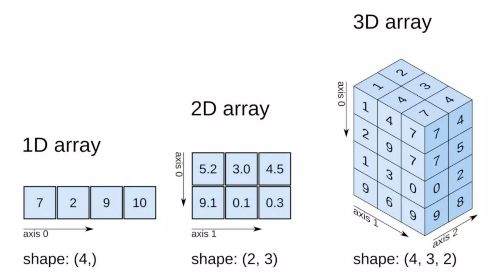

HWRS 564a · Week 4 · Tuesday, September 15
Week 4, session 1 of 2
axis= actually meansBy the end you will be manipulating a model grid the way you will be doing it from Week 10 onward.
# a list
depths_ft = []
for d in depths_m:
depths_ft.append(d * 3.28084)
# an array
depths_ft = depths_m * 3.28084Shorter, yes. That is the least of it.
The loop still happens. It happens in compiled C instead of in Python.
At 5 million cells a 50× difference is the difference between a coffee break and going home. This is not a style preference.
Fixed size, one dtype, a shape. A list has none of those — which is exactly why it can’t be fast.

shape=(4, 3, 2) means four positions on axis 0, three on axis 1, and two on axis 2. The tuple has one entry for every dimension.
Array-with-array works position by position. Array-with-scalar applies the scalar everywhere — that is broadcasting, and it is why depths * 3.28084 does what you expect.
Five well pairs. Compute the gradient for all of them at once, then find the steepest.
Hint
No loop. Subtract one array from the other, divide by the third — numpy lines them up for you. .max() finds the largest.
axis is what gets collapsedSay it as “the axis that disappears.” Every other phrasing I’ve tried leads people to pick the wrong one about half the time.
Compute the mean head in each column — six numbers, one per column — and the head drop from the west edge to the east edge, averaged over all rows.
Hint 1
You want six numbers out of a 4 × 6 array, so the dimension of length 4 — the rows — has to disappear.
Hint 2
Once you have column_means, the drop is just its first element minus its last.
heads[2, 3] # one cell: row 2, column 3
heads[2] # a whole row
heads[:, 3] # a whole column
heads[:2, :2] # the top-left 2x2 blockRow first, then column — the same order MODFLOW uses for [layer, row, column]. Getting used to it now saves you in Week 11.
Slices are half-open: [:2] gives you rows 0 and 1, not 0 through 2.
np.where(condition, if_true, if_false) is the vectorized if. This is how you set a boundary condition across a grid without writing a nested loop.
One cell in this grid is drawn down relative to its neighbours. Find how many cells sit below 406 m, and the value of the single lowest head.
Hint 1
heads < 406.0 gives an array of True/False. Summing it counts the Trues, because True is 1.
Hint 2
.min() works on the whole array at once — you don’t need the mask for that part.
Solution
8 cells, lowest 402.6. Note that the lowest value is on the downgradient boundary, not at the well — the drawdown at 406.2 in row 2 is only anomalous compared to its neighbours. Finding a well by looking for the global minimum would have found the wrong cell.
What you did today
axis= names the dimension that disappearsnp.where replace loops over cellsBefore Thursday
labs/week04/week04_lab_arrays_iteration.ipynbThursday
Iteration: solving equations you cannot rearrange, and finding out what happens when you take too big a time step.
HWRS 564a · Fall 2026